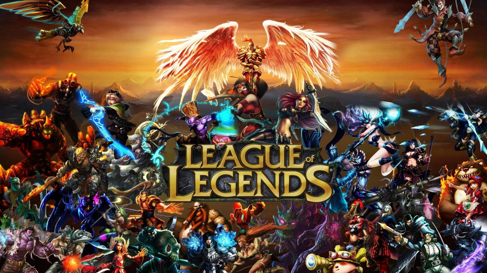
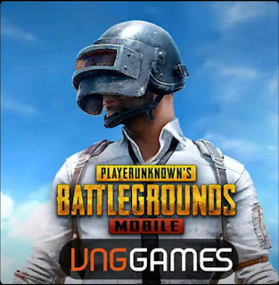

League of legends is a multiplayer MOBA video game developed and published by Riot Games for Microsoft Windows and Mac OS. The game is inspired by the mod called Defense of the Ancients based on Warcraft 3: Reign of Chaos.

FIFA is a group of football video games, released annually by Electronic Arts for Arts and Sports.

PUBG game belongs to the survival games, where the player tries to preserve his life in the game until the end, by following a successful strategy in collecting weapons, ammunition, and armor, and preserving himself by confronting other players and killing them all.